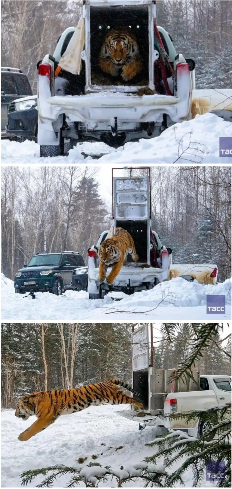
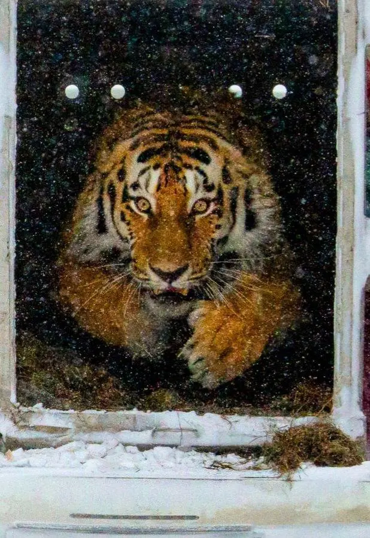

64 · 9 · 11 시간 전 · 원문


수집 당시 댓글 9개
복숭아먹기 · 11 시간 전
소리가 ㅅㅂ 듣자마자 소름돋네 ㅋㅋㅋ
써머침팬지 · 11 시간 전
소리부터가 ㅈㄴ 폭력적이네 ㄷㄷ
븽신대댓글은무시 · 11 시간 전
와씨발 휠베이스 좆돼.... 살아움직이면서 휘두르는 팔 4개 달린 스파크잖아 저건
Terry테리 · 10 시간 전
와 저 사진 집에 붙혀놓으면 절대 가위 안눌리겠다 ㅋㅋㅋ
정테크 · 6 시간 전
왜저렇게 급함?
↳ 답글 · 개드립com · 4 시간 전
급똥
내위에똥꼬 · 3 시간 전
호식이맘
kem · 3 시간 전
와사바리 걸고 초크걸면 이기겠다
갓댕이좆냥이 · 2 시간 전
옛 사람들이 경외하던게 이해가감ㅋㅋ
소리가 ㅅㅂ 듣자마자 소름돋네 ㅋㅋㅋ